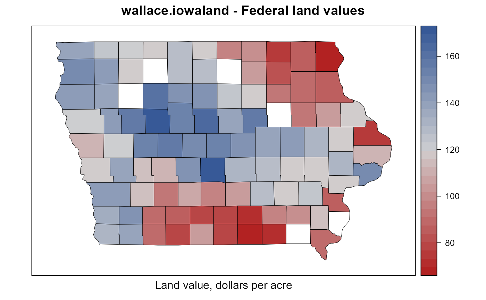

wallace.iowaland.RdIowa farmland values by county in 1925
data("wallace.iowaland")
A data frame with 99 observations on the following 10 variables.
countycounty factor, 99 levels
fipsFIPS code (state+county)
latlatitude
longlongitude
yieldaverage corn yield per acre (bu)
cornpercent of land in corn
grainpercent of land in small grains
untillablepercent of land untillable
fedvalland value (excluding buildings) per acre, 1925 federal census
stvalland value (excluding buildings) per acre, 1925 state census
None.
H.A. Wallace (1926). Comparative Farm-Land Values in Iowa. The Journal of Land & Public Utility Economics, 2, 385-392. Page 387-388. http://doi.org/10.2307/3138610
Larry Winner. Spatial Data Analysis. http://www.stat.ufl.edu/~winner/data/iowaland.txt
library(agridat) data(wallace.iowaland) dat <- wallace.iowaland # Interesting trends involving latitude libs(lattice) splom(~dat[,-c(1:2)], type=c('p','smooth'), lwd=2, main="wallace.iowaland")# Means. Similar to Wallace table 1 apply(dat[, c('yield','corn','grain','untillable','fedval')], 2, mean)#> yield corn grain untillable fedval #> 39.11111 32.47475 21.55556 18.84848 118.67677# Correlations. Similar to Wallace table 2 round(cor(dat[, c('yield','corn','grain','untillable','fedval')]),2)#> yield corn grain untillable fedval #> yield 1.00 0.30 0.27 -0.16 0.61 #> corn 0.30 1.00 0.61 -0.82 0.81 #> grain 0.27 0.61 1.00 -0.59 0.62 #> untillable -0.16 -0.82 -0.59 1.00 -0.69 #> fedval 0.61 0.81 0.62 -0.69 1.00m1 <- lm(fedval ~ yield + corn + grain + untillable, dat) summary(m1) # estimates similar to Wallace, top of p. 389#> #> Call: #> lm.default(formula = fedval ~ yield + corn + grain + untillable, #> data = dat) #> #> Residuals: #> Min 1Q Median 3Q Max #> -36.392 -7.797 -0.110 6.068 31.778 #> #> Coefficients: #> Estimate Std. Error t value Pr(>|t|) #> (Intercept) -64.7071 17.3420 -3.731 0.000326 *** #> yield 3.1488 0.3717 8.472 3.24e-13 *** #> corn 1.8175 0.3090 5.881 6.20e-08 *** #> grain 0.5394 0.2566 2.102 0.038229 * #> untillable -0.5527 0.2697 -2.049 0.043270 * #> --- #> Signif. codes: 0 '***' 0.001 '**' 0.01 '*' 0.05 '.' 0.1 ' ' 1 #> #> Residual standard error: 11.61 on 94 degrees of freedom #> Multiple R-squared: 0.819, Adjusted R-squared: 0.8113 #> F-statistic: 106.3 on 4 and 94 DF, p-value: < 2.2e-16 #># Choropleth map libs(maps) data(county.fips) dat <- transform(dat, polnm = paste0('iowa,',county)) # polnm example: iowa,adair libs("latticeExtra") # for mapplot redblue <- colorRampPalette(c("firebrick", "lightgray", "#375997")) mapplot(polnm~fedval , data=dat, colramp=redblue, main="wallace.iowaland - Federal land values", xlab="Land value, dollars per acre", scales=list(draw=FALSE), map=map('county', 'iowa', plot=FALSE, fill=TRUE, projection="mercator"))#> Warning: 6 unmatched regions: iowa,blackhawk, iowa,buenavista, iowa,cerrogordo, iowa,d....